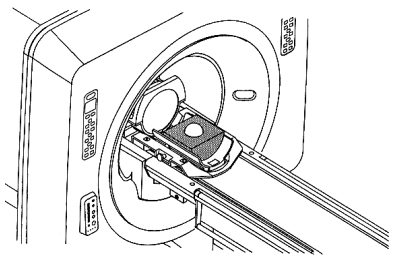

Illustration 2: EPI PHANTOM POSITIONING IN HEAD COIL

| NOTE: | Foreign material (such as staples, metal filings, dirt, etc.) on the LVshim phantom or nesting plate will alter shim harmonics, ensuring that the system will not properly shim. Therefore, before using the phantom and nesting plate, be sure that all foreign material has been cleaned off. |